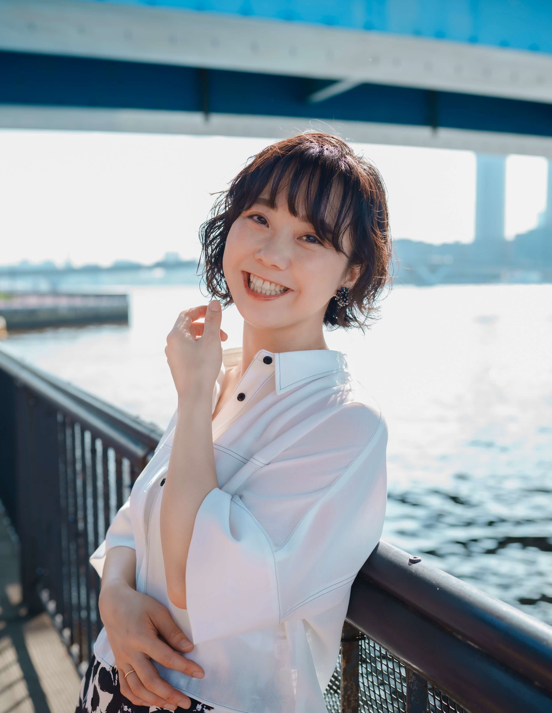
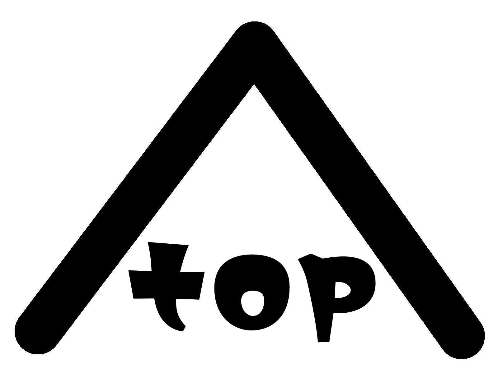

プロフィール

テレビCM・ラジオCM・オーディオブック・ゲーム・舞台など、幅広いジャンルで活動する声優・ナレーター
温かみのある語りから、芯のあるトーン、情感豊かなセリフまで
聴き手に自然と届く「伝わる声」を大切にしています
CMやゲーム、オーディオブックへの出演のほか、各地での舞台公演にも多数参加
表現者としての経験を活かし、声で空気を伝えるナレーションをお届けします
🗓️ プロフィール年表
大学卒業後
舞台「TEAM NACS」を観て、表現の力に感動。
「舞台は奇跡だ」と強く心を動かされ、表現の道へ。
その後
劇団に所属し、舞台やお笑いライブ（ピン芸人）として下積みを重ねる。
「みほの声っていい声だね」という一言に、照れながらも上機嫌に。
この言葉がきっかけで、ナレーターの道を志す。
朗読会に出演
「声で物語を伝える」ことの楽しさと奥深さを知る。
この経験がご縁となり、ナレーター事務所「MIT Artists」へ所属。
MIT Artists時代（2013年〜2025年）
テレビCM、企業VP、ラジオCM、eラーニングなど
幅広いジャンルのナレーションを担当。
温かさ・信頼感・芯のある語りを大切に、言葉と向き合い続ける。
2025年7月
約12年間在籍した事務所を卒業し、独立。
フリーランスナレーター「ふじみ」として活動を開始。
📍現在
CM・報道・企業ナレーションなど、
“伝わる声”をテーマにジャンルを問わず活動中。
あなたのココロのスキマ、声でやさしく埋めます。
ボイスサンプル
フルナレーション
ナレーション①
ナレーション②
ナレーション③
ナレーション④
お仕事の履歴
🎙 ナレーション
- ニトリ（TVCM）
- アクリア（TVCM）
- ヤーマン（R-CM）
- AGF（R-CM）
- GEORGIA（R-CM）
- ユニバーサル・スタジオ・ジャパン（TVCM）
- キリン 一番搾り（R-CM）
- 雲海酒造 Soba&Soda（R-CM）
- 日本図書普及 図書カード（R-CM）
- アサヒ ドライゼロ（R-CM）
- 昭和電工（R-CM）
- その他多数
📚 オーディオブック
🎬 外画（吹き替え）
🎮 ゲーム
- 雨魂 – AMEDAMA -『ねはん』役（Steam）
- 龍が如く 維新！極『山本八重』役（PS4/PS5 他）
- LOST JUDGMENT：裁かれざる記憶 DLC「海藤正治の事件簿」（PS4/PS5 他）
- 龍が如くONLINE『タツ姐』役（PC/スマートフォン）
- 龍が如く0（PS4）
- ECHO OF SOUL（PC）
- My9Swallows TOPSTARS LEAGUE「母親役」ほか
🎪 舞台出演
- 「Tower of Sugar」 2009年7月23日～26日 @全労済ホール/スペース・ゼロ
- 「うたかふぇ」2012〜2013年 東京/仙台
- 「フナバシ TOYS」2013年 東京/仙台
- 「NO SURPRISE,NO LIFE!」2014年 東京/仙台
- 「NICE EIJI!～父まるだし～」2015年 東京/横浜/仙台
- 「うたかふぇ」2015年 サンシャイン劇場
- 「バカの王様〜the KING of BAKA〜」2015年 東京/仙台
- 「玉夢温泉・星影楼にまつわる噺〜その壱〜」2016年 東京/仙台
- 「SOULFUL SOUL」2017年 APOCシアター
- 「さいごのなみだ〜星影楼にまつわる噺 その弐〜」2018年 東京/仙台
- 「結婚のススメ～NO SURPRISE,NO LIFE～」2019年 東京/大阪/名古屋
- その他多数
